Fitur Yang Dibangun :
Disini kami akan menambahkan beberapa fitur pada aplikasi Telegram yaitu :
- Menambahkan Fitur Panggilan Grup
- Menambahkan Fitur Melihat Story
- Menambahkan Fitur Info
- Menambahkan Fitur Video Call Grup
- Menambahkan Fitur Hightlight
Input Phone Number & Name
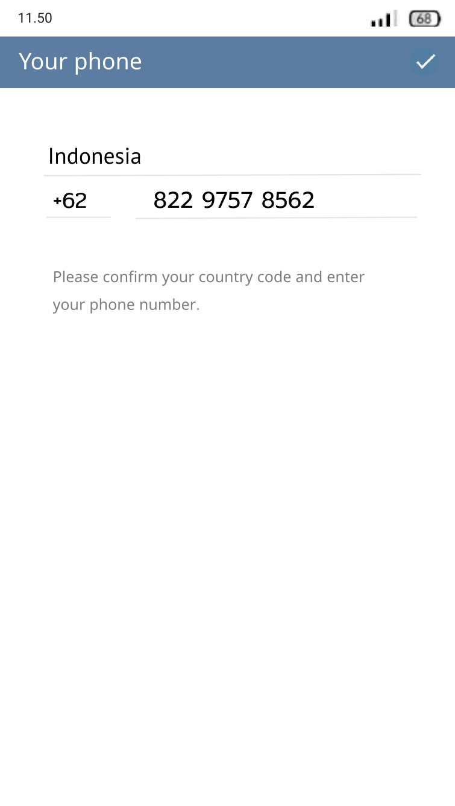
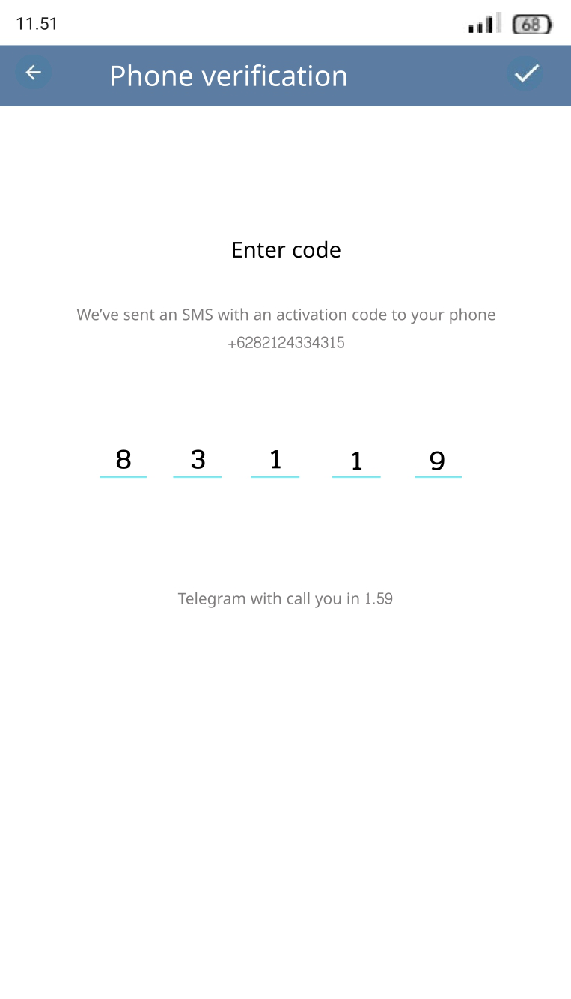
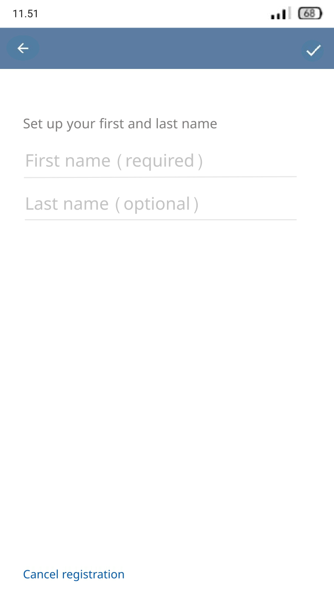
Fitur Info
untuk melihat info, maka pilih ikon titik 3 pada bagian pojok kanan atas
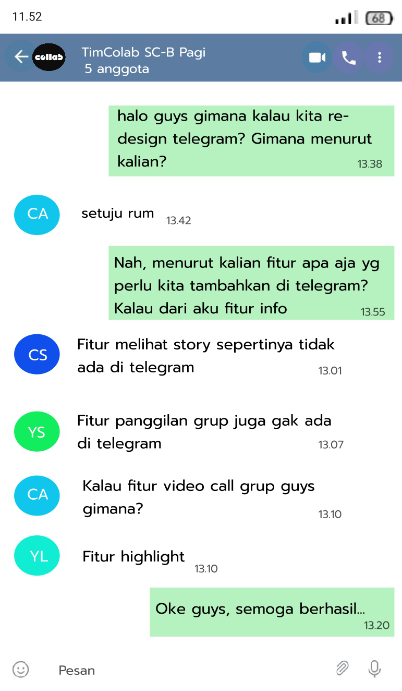
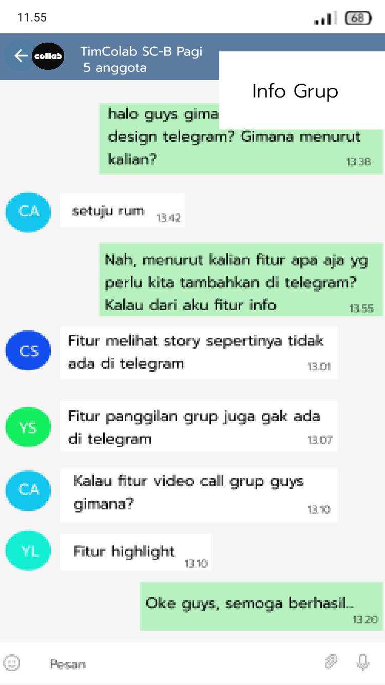
Fitur Video Call Grup
Untuk melakukan Video Call grup, maka tekan tombol panggilan yang ada di pojok kanan atas
Fitur Panggilan Grup
Untuk melakukan panggilan grup, maka tekan tombol panggilan yang ada di pojok kanan atas
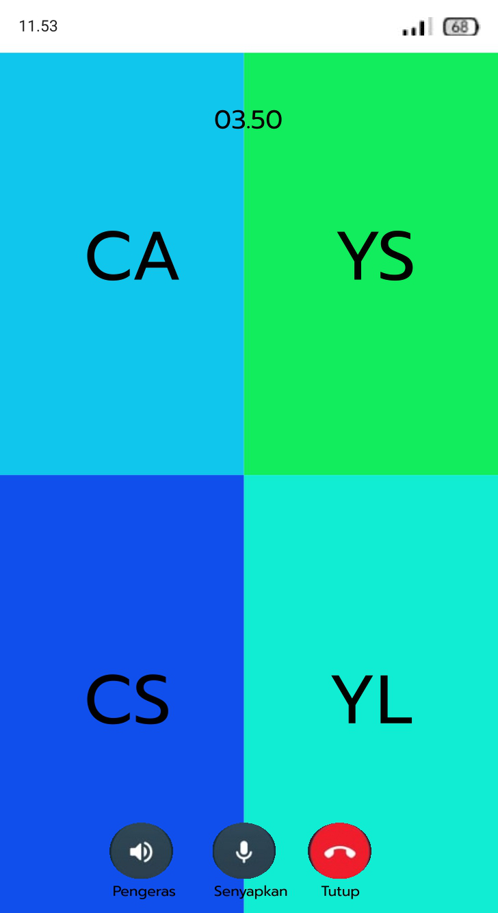
Fitur Membuat Story
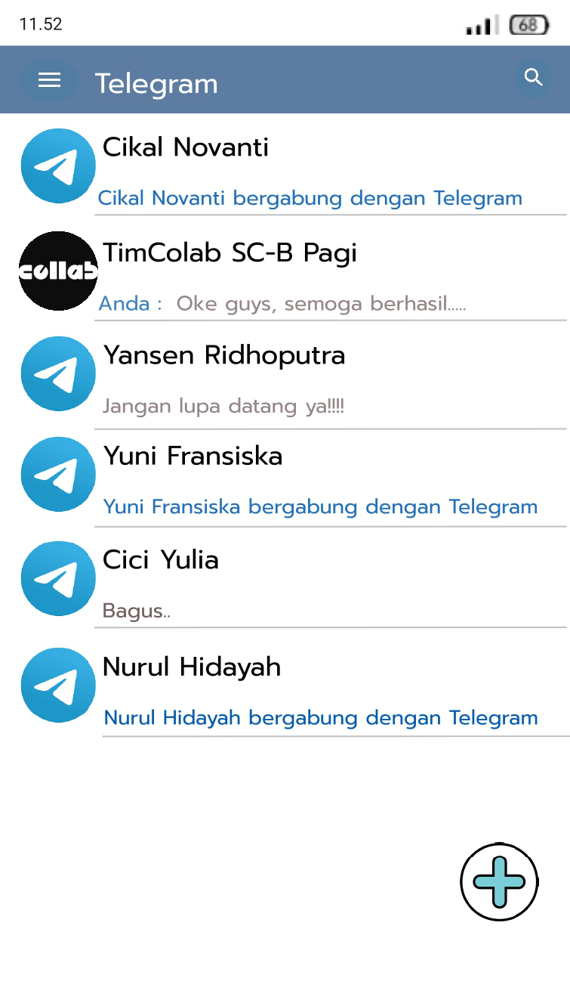
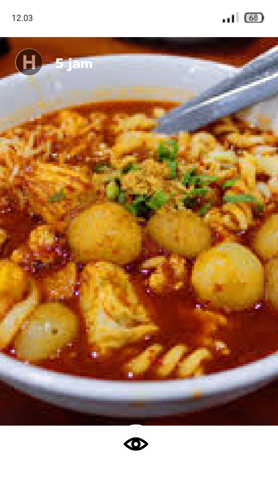
Fitur Melihat Story
Untuk melihat story pilih ikon tambah di bawah pojok kanan, lalu pencet ikon mata di bawah gambar story tersebut
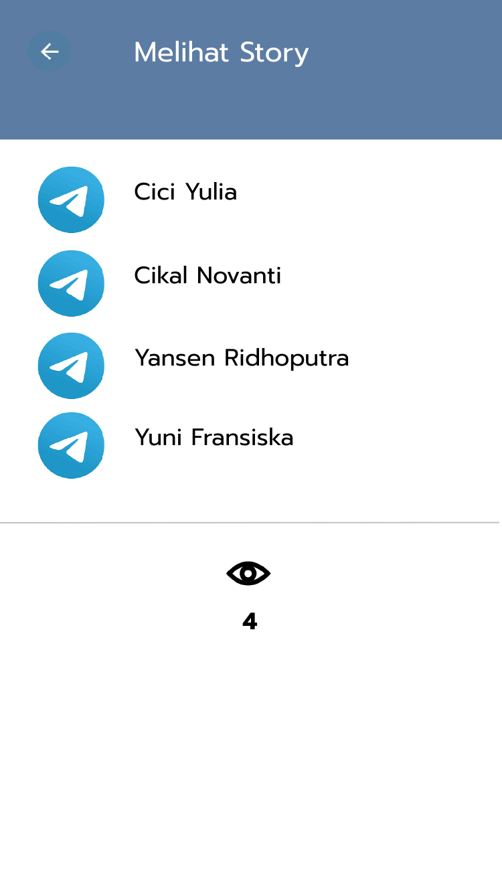
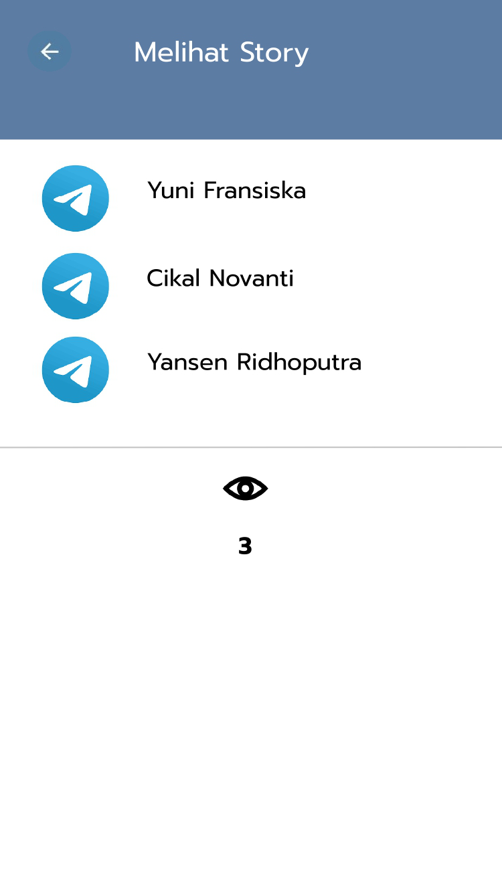
Fitur Membisukan Story
Untuk membisukan maka pencet ikon mata,lalu pilih siapa yang akan dibisukanJangan lupa memilih YA, maka orang tersebut akan dibisukan dan tidak bisa melihat story kita lagi.
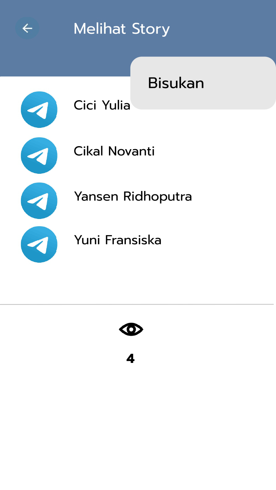
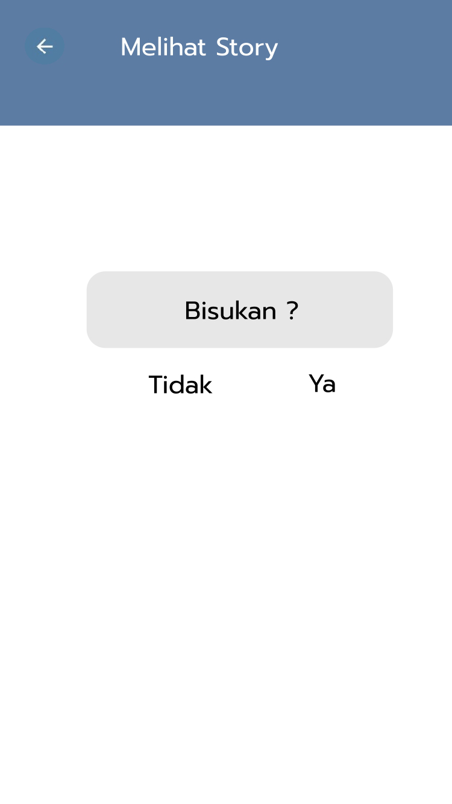
Fitur Highlight
Pilih garis 3 untuk membuka akun pengguna, setelah itu pilih highlight untuk melihat story yang sudah di highlightHighlight dapat dihapus, di edit, dan di kirim dengan pengguna lain dengan cara pilih titik 3 yang ada dibawah pojok kanan
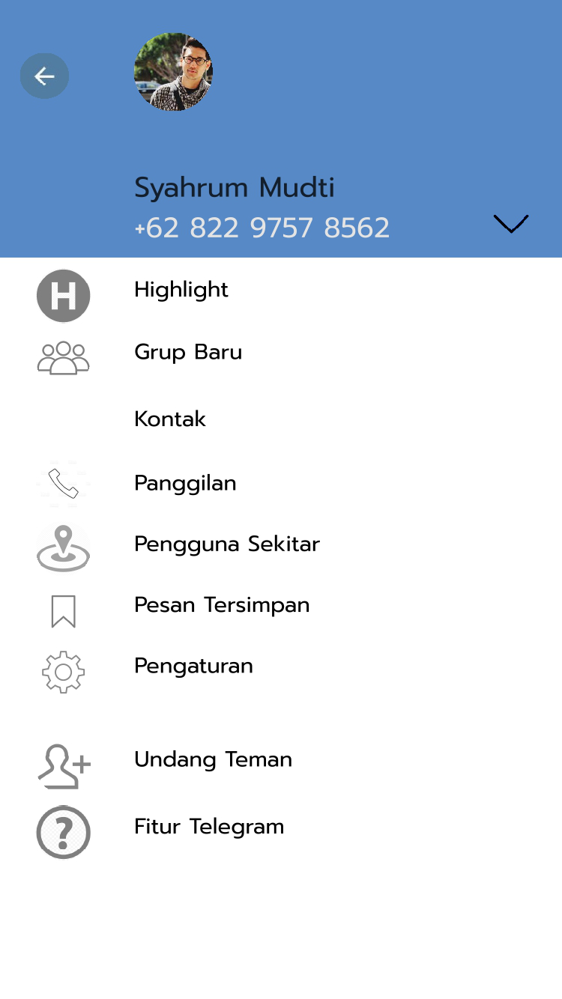
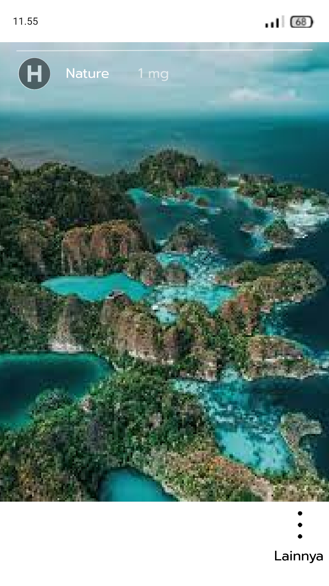
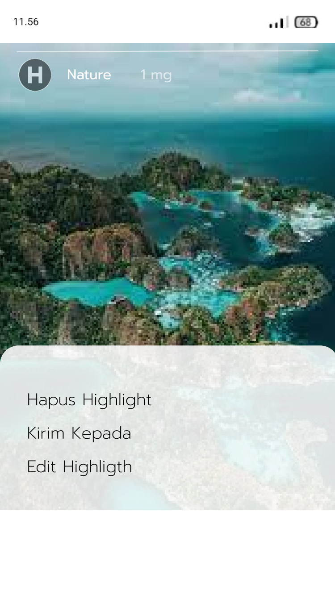